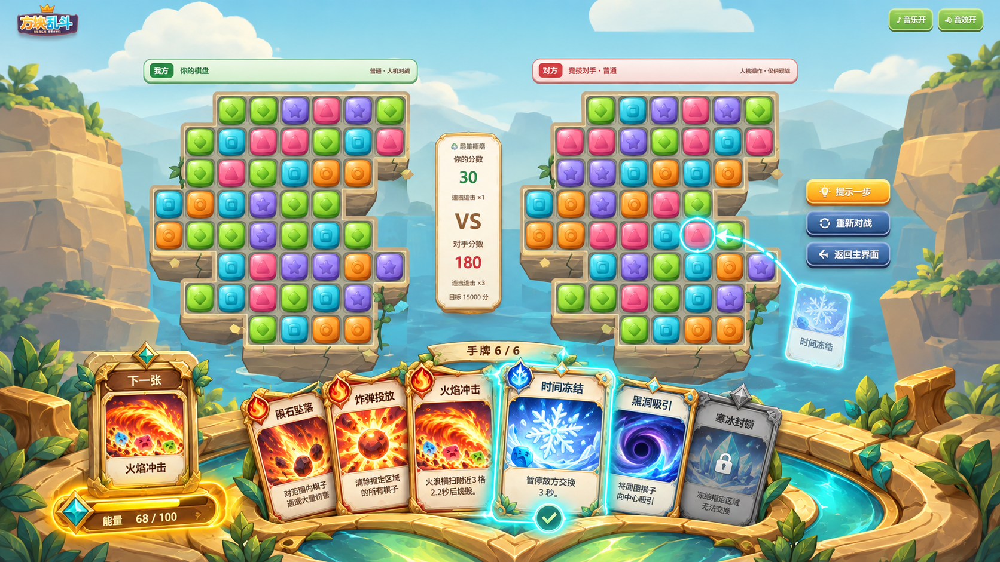

回到原有地图与卡牌样式
本次纠正：撤下统一石框方案，恢复五张地图原有背景、平台和棋盘。六张新卡复用第一轮字体与居中排版。地图后续精修仍需在这些原素材上进行。
查看已确认视觉基准

地图 / 棋盘
全部原地图整合图
全部卡牌 · 同框审核
六张新增原画与第一轮六张成品共用原有进攻 / 控制 / 强化卡框。每张同时展示100px手牌尺寸。
本次纠正：撤下统一石框方案，恢复五张地图原有背景、平台和棋盘。六张新卡复用第一轮字体与居中排版。地图后续精修仍需在这些原素材上进行。

六张新增原画与第一轮六张成品共用原有进攻 / 控制 / 强化卡框。每张同时展示100px手牌尺寸。